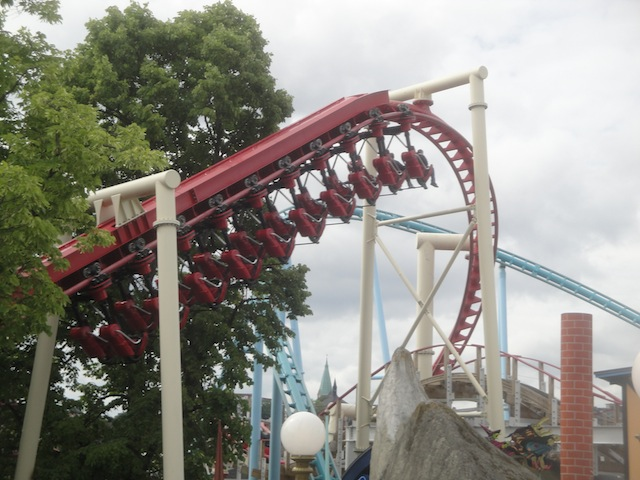

| |
Kvasten Review

We're here at Gröna Lund to ride Kvasten. A Family Inverted Coaster from Vekoma. They started out with the Kiddy SLCs (both the regular ones and the slightly smaller ones that are much better due to their lap bars). Now they've come out with this new custom model, which I have to admit, is definetly a step above what they've previously made. Though to be fair, this thing is starting to catch on. Not to mention they've already made an even better Family Invert. But none the less, this thing is also a lot of fun. All right. Let's hop in the trains, pull down the lap bars (Seriously, those original Kiddy SLCs need lap bars put in ASAP), and away we go. We roll around a turn and climb the lifthill. It's not very big, but thanks to the lack of a catwalk, you get a good view of the path below you, as well as of Twister. We reach the top, and head down a small curved drop, heading right under Twister. Enjoying this so far. We head up a small curved hill, only to head down a small curved drop, right among the trees. We head up an incline, go around a turn, and into a downward helix. Hey, we're gaining some speed. This is good. We head around a turn and F*CK!!! I see a house. TAKE THE HOUSE!!! This leads us right into a downward helix. We gain more speed. Faster and faster (OK, still not very fast, but still), and BOOM!!! Right into the station. The ride is over. Yeah, this ride is mainly a lot of helixes and turns, but you know what? It's fun. It's a fun little family coaster. Plus, this one is themed to flying witches, that always makes things better.
5/10
Location: Gröna Lund
Opened: 2007
Built by: Vekoma
Last Ridden: July 24, 2014
Kvasten Photos


Home
|